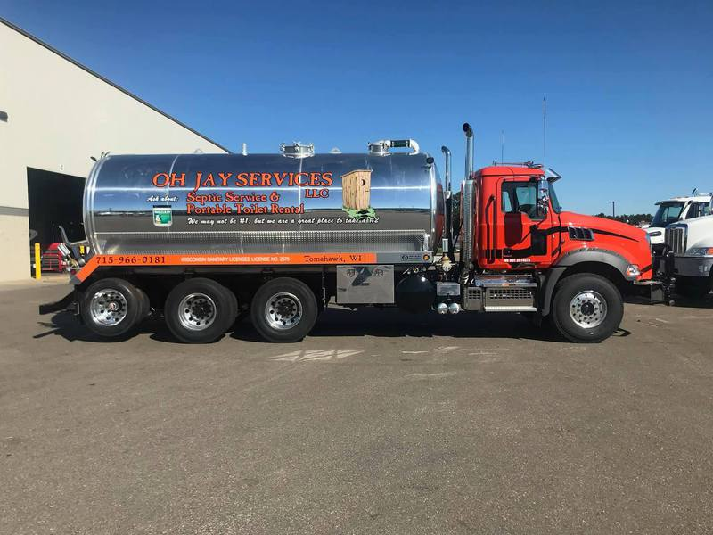
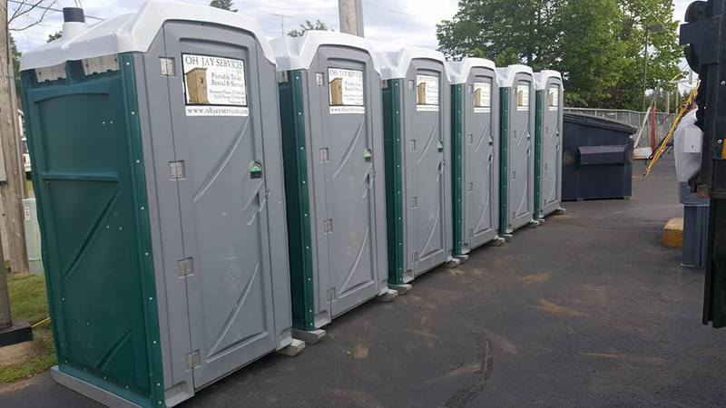
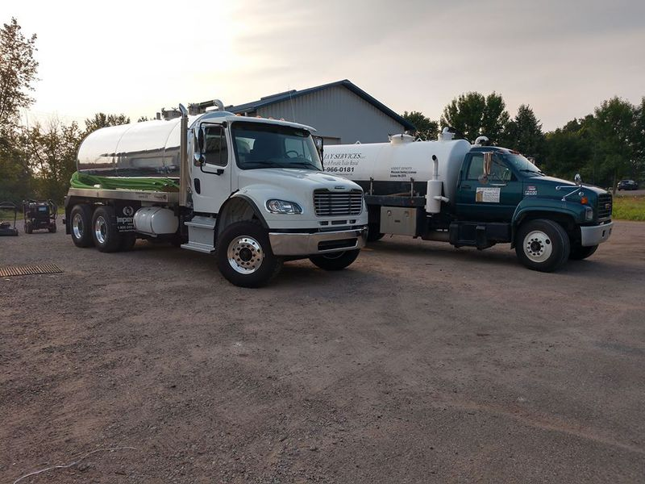
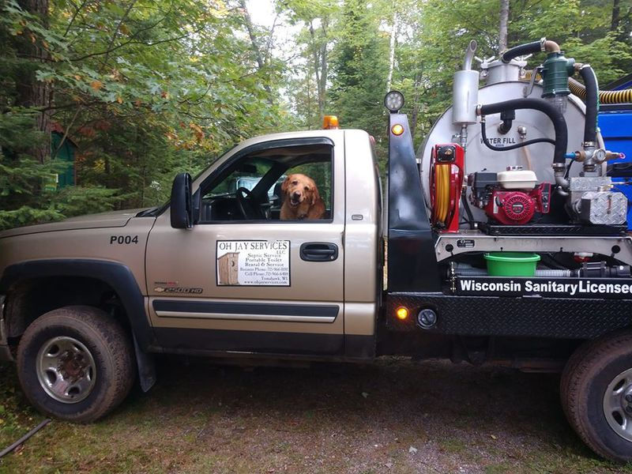

We pump septic and holding tanks, jet and inspect sewer lines, and rent portable toilets and handwash stations. Ask for a free, no hassle quote.
Oh Jay Services provides septic and holding tank professional services, portable toilet rentals and private outhouse services.



The towns named on our site. We also cover the surrounding areas, so call if you are close by.
Four tips from our site.

Bio-Clean is a blend of bacteria and enzymes. The bacteria are natural, not genetically engineered. Ask us about it.
Short answers, taken from what the current site already says.
Tomahawk, Merrill, Minocqua, Rhinelander, Ogema, Hazelhurst, Brantwood, Tripoli, Prentice and surrounding areas.
Yes. Ask for a free, no hassle quotation with the form below.
For immediate service, call Oh Jay Services on 715-966-0181.
A level area at least 4 feet square, close to your event or work area, and within reach of our service truck.
Yes. Contact us if service is needed before the next scheduled service date.
Yes. Camper pumpouts are one of our services.
A blend of natural bacteria and enzymes that digests organic waste in drains, septic tanks and drain fields. We are an authorized dealer.
Tell us what you need and we will get back to you. For immediate service, call 715-966-0181.